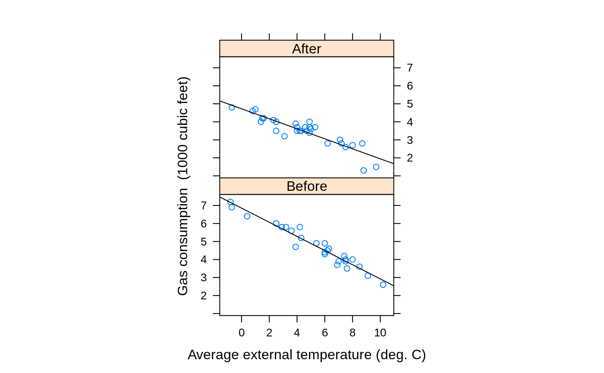

whiteside.RdMr Derek Whiteside of the UK Building Research Station recorded the weekly gas consumption and average external temperature at his own house in south-east England for two heating seasons, one of 26 weeks before, and one of 30 weeks after cavity-wall insulation was installed. The object of the exercise was to assess the effect of the insulation on gas consumption.
whiteside
The whiteside data frame has 56 rows and 3 columns.:
InsulA factor, before or after insulation.
TempPurportedly the average outside temperature in degrees Celsius. (These values is far too low for any 56-week period in the 1960s in South-East England. It might be the weekly average of daily minima.)
GasThe weekly gas consumption in 1000s of cubic feet.
A data set collected in the 1960s by Mr Derek Whiteside of the UK Building Research Station. Reported by
Hand, D. J., Daly, F., McConway, K., Lunn, D. and Ostrowski, E. eds (1993) A Handbook of Small Data Sets. Chapman & Hall, p. 69.
Venables, W. N. and Ripley, B. D. (2002) Modern Applied Statistics with S. Fourth edition. Springer.
require(lattice)#>xyplot(Gas ~ Temp | Insul, whiteside, panel = function(x, y, ...) { panel.xyplot(x, y, ...) panel.lmline(x, y, ...) }, xlab = "Average external temperature (deg. C)", ylab = "Gas consumption (1000 cubic feet)", aspect = "xy", strip = function(...) strip.default(..., style = 1))gasB <- lm(Gas ~ Temp, whiteside, subset = Insul=="Before") gasA <- update(gasB, subset = Insul=="After") summary(gasB)#> #> Call: #> lm(formula = Gas ~ Temp, data = whiteside, subset = Insul == #> "Before") #> #> Residuals: #> Min 1Q Median 3Q Max #> -0.62020 -0.19947 0.06068 0.16770 0.59778 #> #> Coefficients: #> Estimate Std. Error t value Pr(>|t|) #> (Intercept) 6.85383 0.11842 57.88 <2e-16 *** #> Temp -0.39324 0.01959 -20.08 <2e-16 *** #> --- #> Signif. codes: 0 ‘***’ 0.001 ‘**’ 0.01 ‘*’ 0.05 ‘.’ 0.1 ‘ ’ 1 #> #> Residual standard error: 0.2813 on 24 degrees of freedom #> Multiple R-squared: 0.9438, Adjusted R-squared: 0.9415 #> F-statistic: 403.1 on 1 and 24 DF, p-value: < 2.2e-16 #>summary(gasA)#> #> Call: #> lm(formula = Gas ~ Temp, data = whiteside, subset = Insul == #> "After") #> #> Residuals: #> Min 1Q Median 3Q Max #> -0.97802 -0.11082 0.02672 0.25294 0.63803 #> #> Coefficients: #> Estimate Std. Error t value Pr(>|t|) #> (Intercept) 4.72385 0.12974 36.41 < 2e-16 *** #> Temp -0.27793 0.02518 -11.04 1.05e-11 *** #> --- #> Signif. codes: 0 ‘***’ 0.001 ‘**’ 0.01 ‘*’ 0.05 ‘.’ 0.1 ‘ ’ 1 #> #> Residual standard error: 0.3548 on 28 degrees of freedom #> Multiple R-squared: 0.8131, Adjusted R-squared: 0.8064 #> F-statistic: 121.8 on 1 and 28 DF, p-value: 1.046e-11 #>#> #> Call: #> lm(formula = Gas ~ Insul/Temp - 1, data = whiteside) #> #> Residuals: #> Min 1Q Median 3Q Max #> -0.97802 -0.18011 0.03757 0.20930 0.63803 #> #> Coefficients: #> Estimate Std. Error t value Pr(>|t|) #> InsulBefore 6.85383 0.13596 50.41 <2e-16 *** #> InsulAfter 4.72385 0.11810 40.00 <2e-16 *** #> InsulBefore:Temp -0.39324 0.02249 -17.49 <2e-16 *** #> InsulAfter:Temp -0.27793 0.02292 -12.12 <2e-16 *** #> --- #> Signif. codes: 0 ‘***’ 0.001 ‘**’ 0.01 ‘*’ 0.05 ‘.’ 0.1 ‘ ’ 1 #> #> Residual standard error: 0.323 on 52 degrees of freedom #> Multiple R-squared: 0.9946, Adjusted R-squared: 0.9942 #> F-statistic: 2391 on 4 and 52 DF, p-value: < 2.2e-16 #>#> Estimate Std. Error t value Pr(>|t|) #> InsulBefore 6.759215179 0.150786777 44.826312 4.854615e-42 #> InsulAfter 4.496373920 0.160667904 27.985514 3.302572e-32 #> InsulBefore:Temp -0.317658735 0.062965170 -5.044991 6.362323e-06 #> InsulAfter:Temp -0.137901603 0.073058019 -1.887563 6.489554e-02 #> InsulBefore:I(Temp^2) -0.008472572 0.006624737 -1.278930 2.068259e-01 #> InsulAfter:I(Temp^2) -0.014979455 0.007447107 -2.011446 4.968398e-02#> Analysis of Variance Table #> #> Model 1: Gas ~ Insul + Temp #> Model 2: Gas ~ Insul/Temp - 1 #> Res.Df RSS Df Sum of Sq F Pr(>F) #> 1 53 6.7704 #> 2 52 5.4252 1 1.3451 12.893 0.0007307 *** #> --- #> Signif. codes: 0 ‘***’ 0.001 ‘**’ 0.01 ‘*’ 0.05 ‘.’ 0.1 ‘ ’ 1options(contrasts = c("contr.treatment", "contr.poly")) gasBA1 <- lm(Gas ~ Insul*Temp, whiteside) coef(summary(gasBA1))#> Estimate Std. Error t value Pr(>|t|) #> (Intercept) 6.8538277 0.13596397 50.409146 7.997414e-46 #> InsulAfter -2.1299780 0.18009172 -11.827185 2.315921e-16 #> Temp -0.3932388 0.02248703 -17.487358 1.976009e-23 #> InsulAfter:Temp 0.1153039 0.03211212 3.590665 7.306852e-04